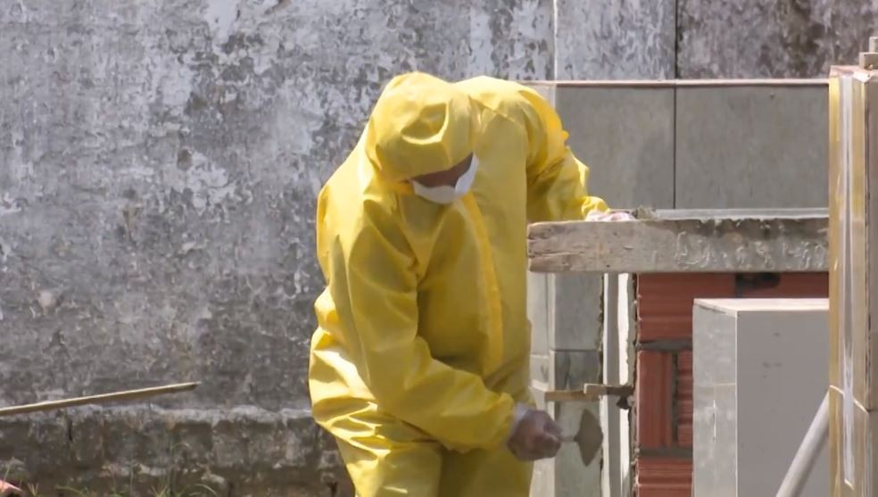

Maringá registra aumento de 30% nas mortes por Covid-19 em uma semana, aponta prefeitura
Total de mortes, que representa uma média de uma vítima a cada três horas, é também o maior registrado nas últimas sete semanas.
Maringá registra aumento de 30% nas mortes por Covid-19 em uma semana, aponta prefeitura — Foto: Reprodução Rede Amazônica
Maringá, no norte do Paraná, registrou aumento de 30% de mortes por Covid-19 em uma semana, de acordo com números atualizados pela prefeitura. Conforme os dados do município, entre 14 de junho e domingo (20), foram 52 óbitos em decorrência da doença na cidade.
O total de mortes, que representa uma média de uma vítima a cada três horas, é também o maior das últimas sete semanas, com três altas consecutivas, segundo a prefeitura. Veja o número dos óbitos nas últimas dez semanas em Maringá:
- ⦁De 12 a 18 de abril: 68 mortes;
- ⦁19 a 25 de abril: 36 mortes;
- ⦁26 de abril a 2 de maio: 55 mortes;
- ⦁3 a 9 de maio: 27 mortes;
- ⦁10 a 16 de maio: 19 mortes;
- ⦁17 a 23 de maio: 29 mortes;
- ⦁24 a 30 de maio: 29 mortes;
- ⦁31 de maio a 6 de junho: 32 mortes;
- ⦁7 a 13 de junho: 40 mortes;
- ⦁14 a 20 de junho: 52 mortes.
Em relação ao total de novas infecções, houve recuo de 1% na última semana, de acordo com os dados. Foram 1.779 novos casos da doença entre os dias 14 e 20, ante 1.797 na semana anterior.
Apesar da queda de confirmações, o número foi o segundo maior de novas pessoas contaminadas em Maringá nas últimas 13 semanas.